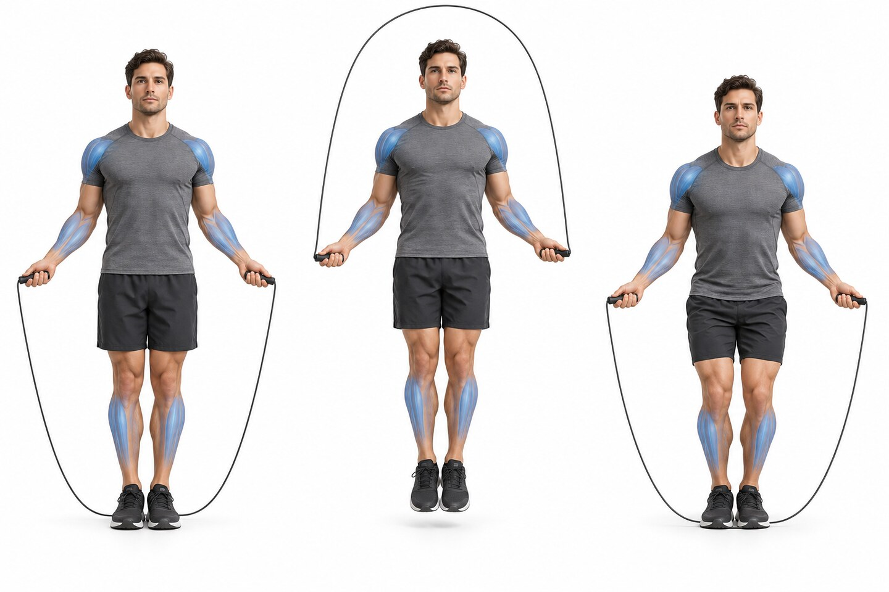
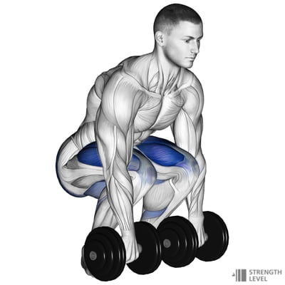

SESSION 4 OF 6 · MEDIUM INTENSITY
Engine Intervals
Exactly 60 minutes · rower, jump rope, box + dumbbells
60 minutes6–7 effort / 105 phases
Raise the temperature
- 5 min easy row, gradually building pace
- 20 ankle rocks per side
- 20 slow calf raises
- 2 × 30 sec relaxed rope singles
- 10 bodyweight box step-ups
10:00–20:00 · SKILL
EMOM × 10Rope + step practice
O40 sec rope practice Odd minutes · singles or double-under practice3 positions

E10 box step-ups + 6 light dumbbell RDLs Even minutes2 diagrams


Treat this as technique work. Stop rope sets before misses pile up and keep every landing quiet.
20:00–25:00Set the rower, choose the box height, and take water.
25:00–50:00 · CONDITIONING
5 roundsFive-minute engine
12:00 row Strong, repeatable pace3 positions

21:00 jump rope3 positions
31:00 alternating box step-upsDiagram
41:00 full rest
Repeat the same five-minute sequence five times. Keep the row within about 5% of your first-round distance.
Recover
- 3 min very easy row
- 1 min calf stretch per side
- 1 min quad stretch per side
- 1 min hamstring stretch per side
- 1 min slow breathing
Scaling and safety
Use rope singles or simulated rope turns. Lower the box or slow the cadence if you cannot place the whole foot securely on every step.
All six 60-minute sessions
Exercise diagrams: Strength Level.
Stop for sharp pain, dizziness, or unusual shortness of breath.
↑ Back to top